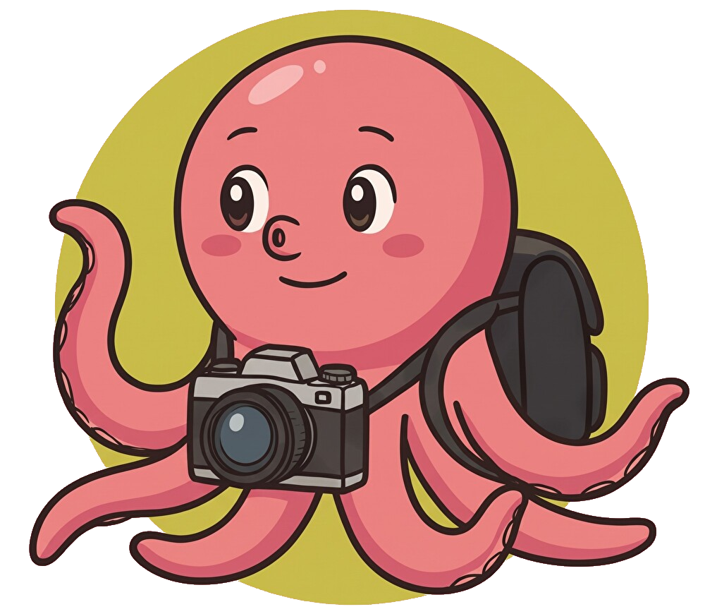

Octopus Tools・掲載されているすべてのWebツールは、画像の読み込みから編集、出力までブラウザ内部（ローカル環境）で処理を行います。
写真や画像データがサーバー等へ送信されることは一切ありません。
・PC、タブレット、スマートフォンの各画面サイズに最適化されたレスポンシブデザインを採用しています。
・ダークモード設定は本ポータルおよび各ツール間で共通して保存・反映されます。
・本ツールのソースコードおよび関連リソースは MIT License のもとで公開されています。